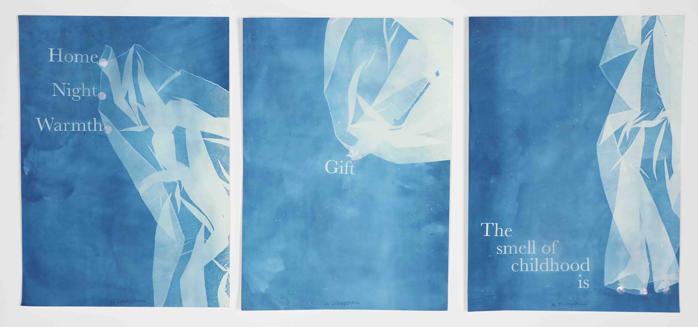
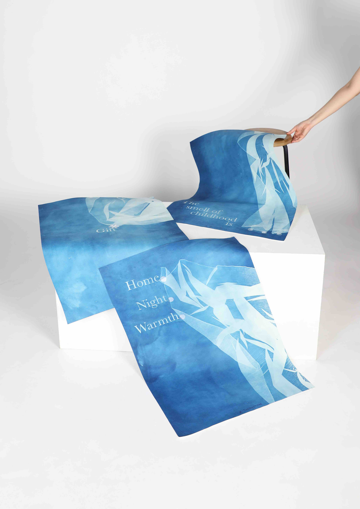
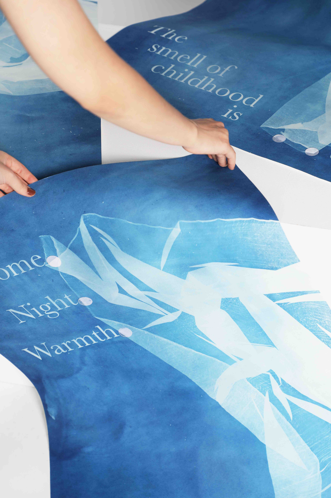
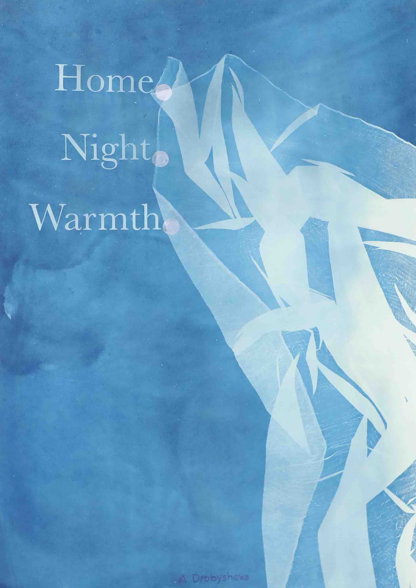
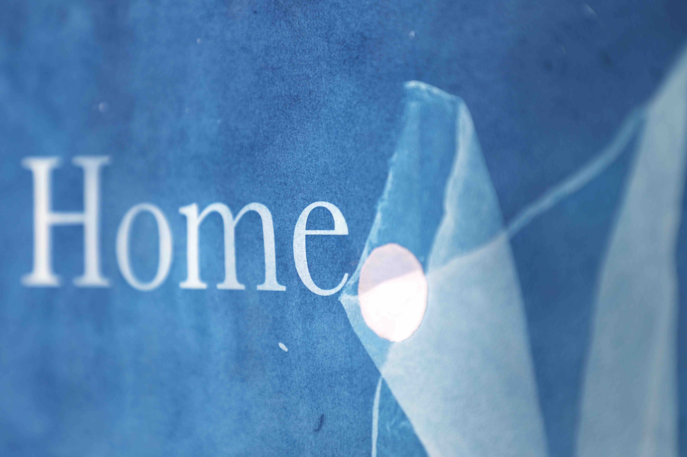
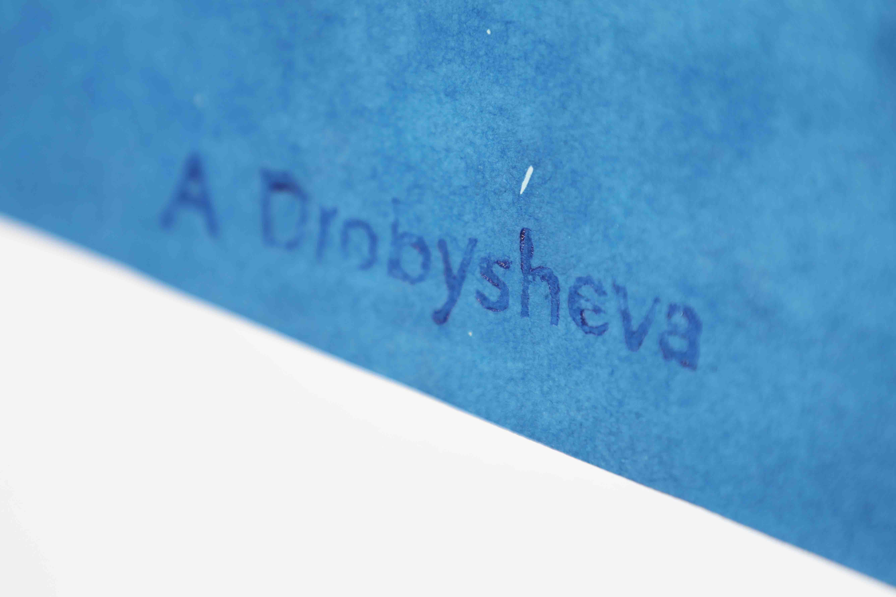

Home.
Night.
Warmth.
Poster triptych
October 2022




Guided by
Sandra Kassenar
ArtEZ
2022

The series of three posters was made as an exploration of the emotional response evoked by punctuation. The series was inspired by nominal sentences and the use of punctuation in modernist poetry.
Cyanotype. Shapes created with folds of fabric.
Exhibited at the Rozet Library, Arnhem

